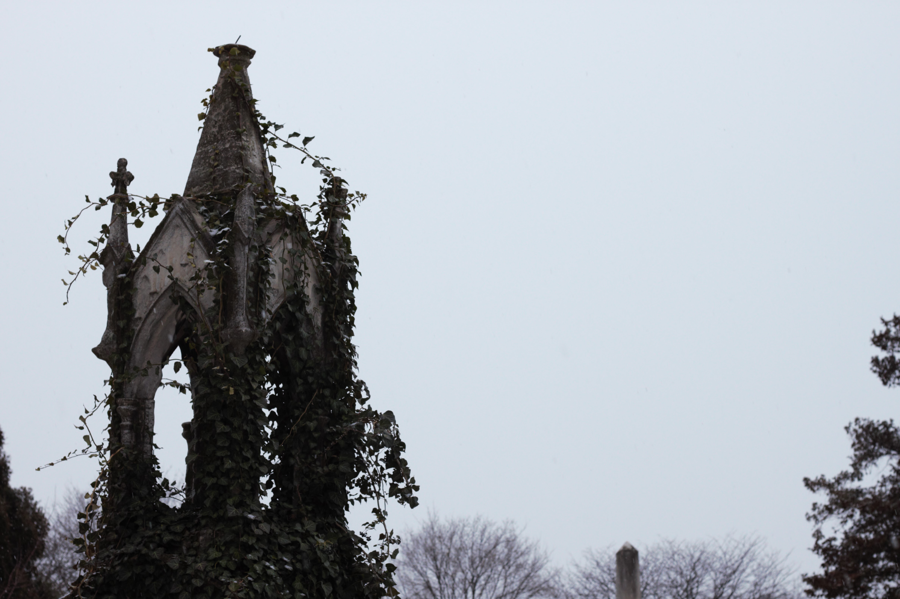
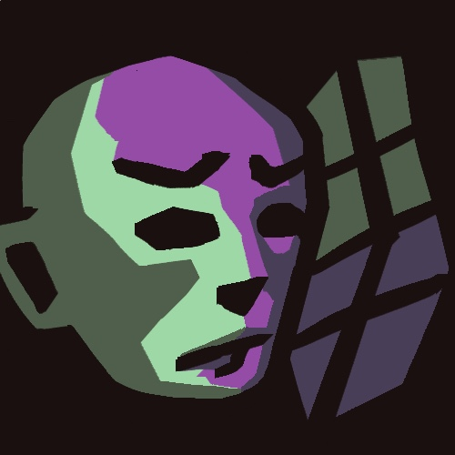
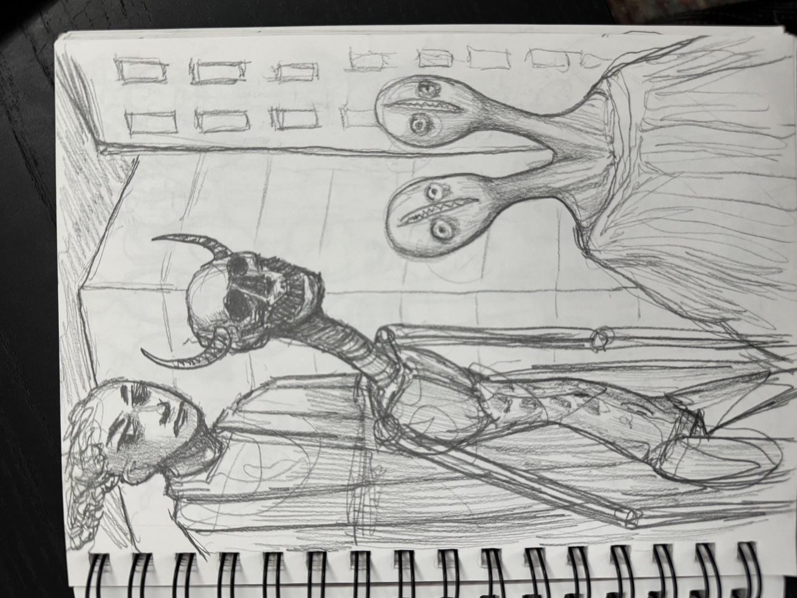

Hi, I'm Teddy.
This mockup shows what the landing page will look like when the user has their browser's preference set to dark mode. For the final, this is where my short biography will go.
UX Case Studies


Personal Projects


Artwork

